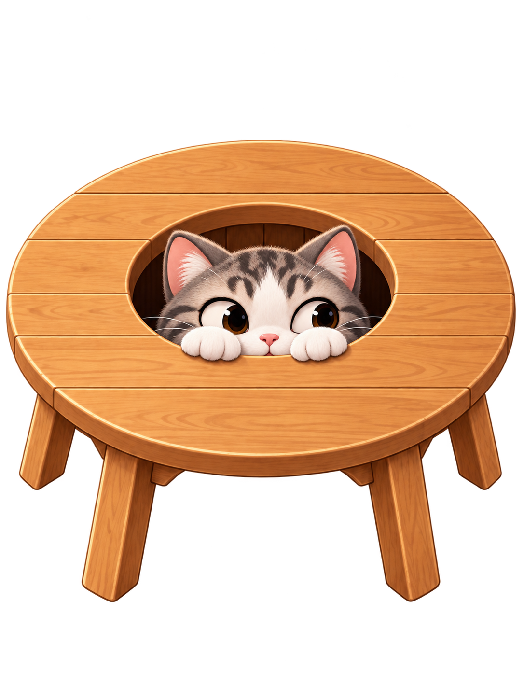
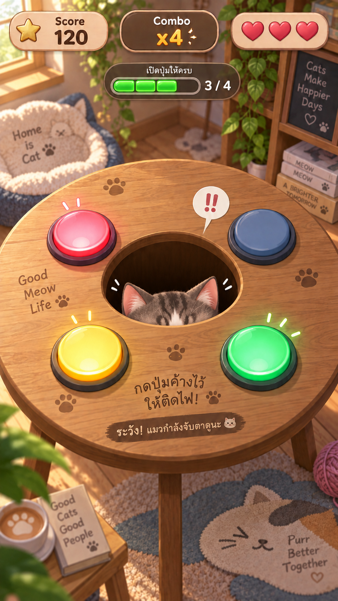
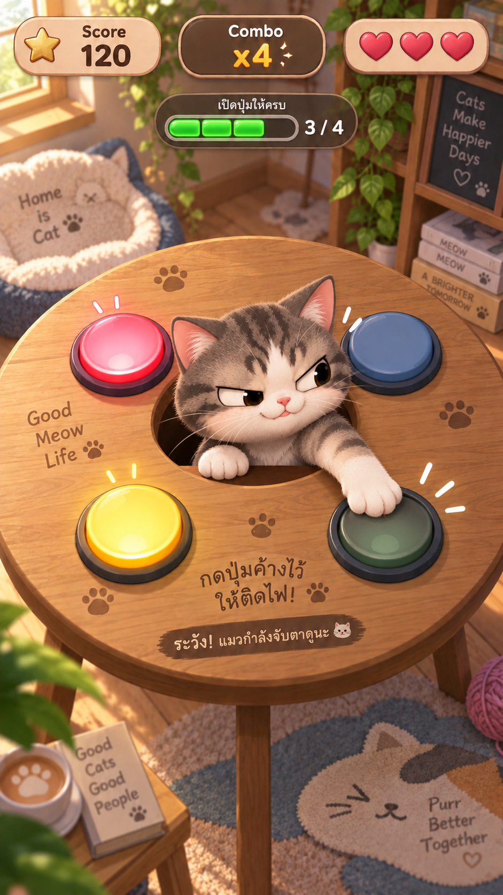

Prototype — real reference image
ตัวอย่างประกอบด้วยภาพจริง
ตัวอย่างนี้ใช้ reference/cat-1.png จริงซ้ำ 3 ครั้ง ทุกชิ้นอยู่ตำแหน่งเดียวกัน แล้วใช้ Clip แยกพื้นที่ BACK / MIDDLE / FRONT เพื่อให้เห็นหลักการประกอบโต๊ะก่อนมี Asset แยกจริง
ภาพรวม: โต๊ะชิ้นเดียว

BACK — z10 MIDDLE — z20 FRONT — z30Anchor: Center of Holeภาพจริงซ้อน 3 Layer
เปิด/ปิด Layer เพื่อดูการประกอบ
PASS — ทุก Layer ซ้อนตรงกัน
นี่เป็นตัวอย่างภาพจริงแบบง่าย ๆ: ในระบบจริงจะเปลี่ยนแต่ละภาพ Clip เป็นไฟล์ PNG แยกตาม GUIDE โดยคง Transform และ Anchor เดิมทั้งหมด
ภาพต้นฉบับที่ใช้

